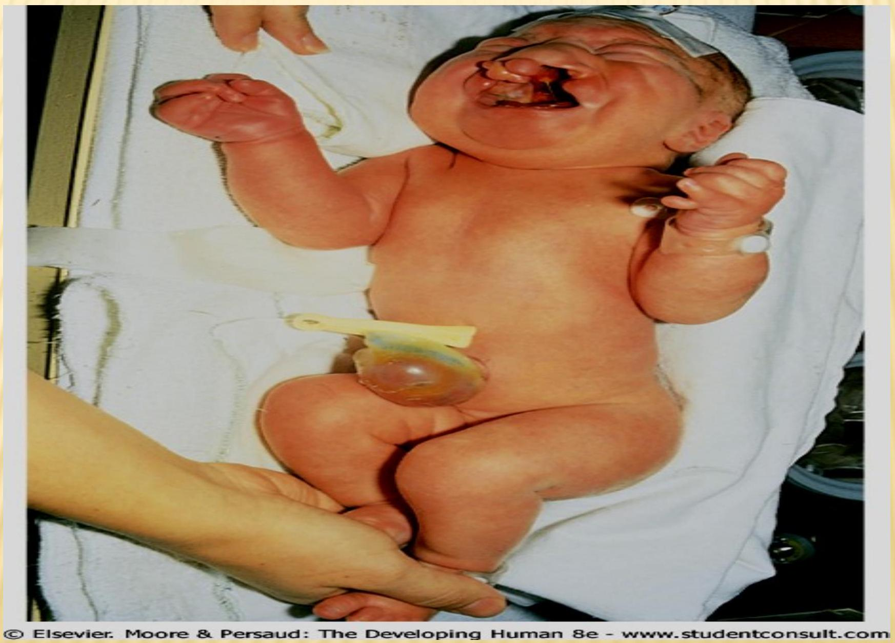
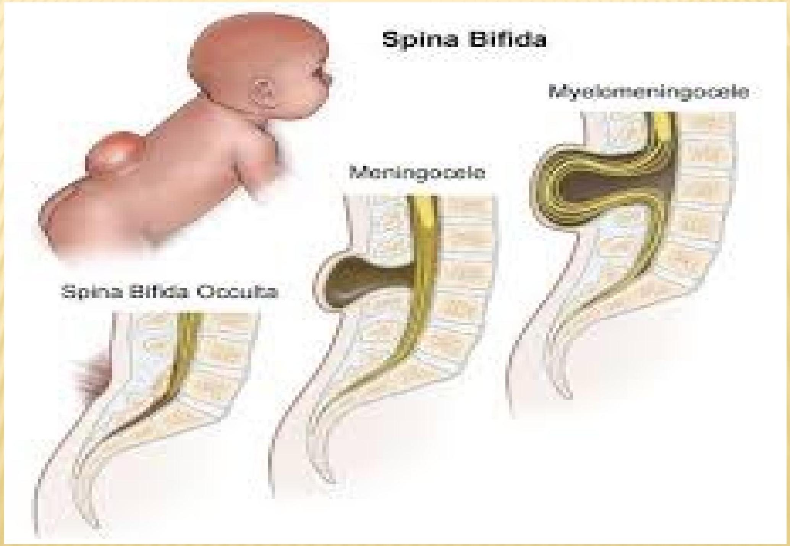
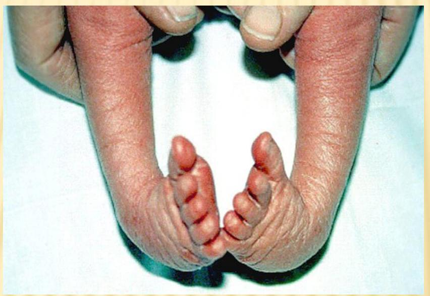

Congenital Abnormalities
Introduction to Congenital Abnormalities
Congenital malformation is a condition which is present at the time of birth which varies from the standard presentation. About 3% of newborns have a "major physical anomaly", meaning a physical anomaly that has cosmetic or functional significance
CAUSES OF CONGENITAL ANOMALIES
1. GENETICS
- Chromosomal defects - caused by too few or too many chromosomes, or problems in the structure of the chromosomes. Example includes Down syndrome (and extra copy of chromosome 21 and sex chromosome abnormalities (missing or extra copies of the sex chromosomes X or Y ).
- Single gene defects - a mutation in one gene causes the defect
2. Environmental factors such as radiations, and drugs.
3. Infections: [2%]
- TORCH and Parvo viral infections
- TORCH, which includes Toxoplasmosis, Other (syphilis, varicella-zoster, parvovirus B19), Rubella, Cytomegalovirus (CMV), and Herpes infections,
4. Maternal Illnesses: [5%]- Diabetes, Epilepsy
5. Drugs: [1-2%]
- Warfarin, Lithium, Phenytoin
6. Idiopathic - 60%
7. Advanced maternal age - above 40 years Down's syndrome or Mongolism
8. High Parity - at risk for malformations except Anencephaly and spinabifida
DIAGNOSIS
Genetic Counselling:
- Recurrence is 6 fold and 70% in second and third pregnancies
- Age, family history, history of past malformations
- Antenatal complications like oligo, poly hydramnios etc.,
COMMONLY-KNOWN BIRTH DEFECTS
- Congenital heart defects
- Cleft Lip and Cleft Palate
- Spina Bifida
- Club Foot
- Down Syndrome
CONGENITAL HEART DISEASES
SIGNS OF CVS DISEASE IN NEONATES
Cyanosis, signs of heart failure other signs include tachypnea, retractions, nasal flaring, shallow respirations, enlarged liver, arrhythmias, murmurs, cardiomegaly, abnormal ECG.
CARDIAC DEFECTS
| Cyanotic | Acyanotic |
|---|---|
|
|
DEFECTS
TRANSPOSITION OF THE GREAT VESSELS - the aorta originates in the right ventricle rather than the left while the pulmonary artery originates from the left ventricle rather than the right.
ATRIAL SEPTAL DEFECT - An abnormal opening between the right and left atria persists after birth with left to right shunting of blood. This may result from failure of the foramen ovale to close properly.
The vascular connection between the pulmonary artery and the aorta which is functional during fetal life persists after birth. When it remains open the direction of blood flow is reversed because of higher pressure in the aorta shunting oxygenated from the aortic blood into the pulmonary vasculature (during foetal life the shunt is from the pulmonary artery to the aorta).
There is an abnormal left opening between the right and left ventricles. Shunting of blood between the right and left ventricle occurs during systole because of higher left ventricular pressure. If pulmonary resistance occurs the shunt is reversed and occurs right to left with resultant cyanosis.
There is a constriction of aorta causing narrowing of the lumen. This partially obstructs blood flow, creating increased left ventricular pressure and work load. The coarctation may occur before or after the ductus arteriosus.
Four defects are combined in TOF. There is: pulmonary stenosis, ventricular septal defect, overriding aorta and hypertrophy of the right ventricle. Severities of the symptoms depend on the size ventricular septal defect, degree of pulmonary stenosis and the degree to which the aorta overrides the septal defect.
Diagnosis is done through cardiac catheterization as well as by angiography Once the lesion has been identified it can be corrected surgically or by use of medication such as: Digoxin, morphine, prostaglanding infusion, diuretics, and use of supplementary oxygen Monitoring of fluid and electrolyte balance.
Nursing Management
- Preparing the infant and assisting in diagnostic procedures
- Provide small frequent feeds
- Maintain input and output fluid records
- Administering oxygen and monitoring blood gas status
- Ensure safe administering of digoxin by checking dosage and route with another nurse
- Monitor apical pulse and withhold digoxin if less than 90.
GASTROINTESTINAL MALFORMATIONS
CLEFT LIP AND CLEFT PALATE
INTRODUCTION
This results from failure of the soft or bony tissue of the palate and the upper jaw to unite during the fifth to tenth weeks gestation. It may be unilateral or bilateral. Factors associated with these conditions include: genetic factors, hypoxia, maternal viral infections and nutritional factors.
When only the lip is involved, surgery can be done within the first day of life. When the Palate is involved, the repair is usually postponed to 6 to 24 months. The infant should be fit nutritionally and free of infections, complications of this surgery include speech problems and respiratory tract infections.
Pre-operative Nursing Care
- Reassure the parents and ensure that the surgical team meets with the parents to explain the procedure.
- Using a feeding bottle would be appropriate as sucking of the nipple strengthens the muscles.
- Place the infant in an upright position and direct the flow of milk against the side of the mouth to decrease the possibility of chocking.
- Mother needs to be told that feeding is important to ensure adequate growth until surgery can be performed
- Thickened formulas are often used. Show mother how to feed the baby with breast milk
- Note that babies with minor clefts can breastfeed
- However those with bilateral clefts must be fed by cup and spoon
- Take care to prevent aspiration
Post-operative Nursing Care
- Cleft lip repair- position the child on one side to avoid injury to the incision site. After feeding cleanse the suture line with a cotton tipped swab dipped in normal saline. Administer antibiotics as prescribed.
- Cleft palate repair- Infant can be positioned on the abdomen. Feedings are resumed by bottle, breast or cup. Encourage parents to hold the infant.
OTHERS INCLUDE:
- Gastroschisis
- Ompholocele
- Atresias- Esophageal and rectal
- Hirchsprung's disease
Define the above
CENTRAL NERVOUS SYSTEM ABNORMALITIES
SPINA BIFIDA
It is a midline defect of vertebral discs without protrusion of spinal cord and meninges. This is a common malformation of the spinal column and is due to congenital lack of one or more vertebral discs, usually at the lower part of the spine.(usually involving L5 and S1) Patches of hair and discoloration of the skin in the midline of lower back signifies malformation of the spinal cord.
When the membranes covering the spinal cord bulge through the opening the condition is known as meningocele (a soft tumor filled with CSF fluid is formed). The tumor can be influenced by pressure. Surgical closure should be done as soon as possible to prevent further deterioration of the spinal cord.
Myelomeningocele-both the spinal cord and the meninges herniate through the defect in the vertebral column. Most cases involve the lumbo-sacral region but may exist anywhere in the neural axis.
Encephalocele - abnormality that affects the skull and result in protrusion of tissue through a bony midline defect called cranium bifida. The two forms are:
- cranial meningocele-herniation of CSF filled meningocele sac through the cranium bifida.
- Cranial encephalocele- contains a sac plus cerebral cortex, Cerebellum and a portion of the brain stem herniating out.
AETIOLOGY AND RISK FACTORS
- Genetic determinants
- Malnutrition- folic acid deficiency
- Drugs e.g. anticonvulsants
- Radiation
Nursing Management
- Ensure the infant is nursed in a prone position
- Ensure the area remains clean and free from contamination by urine or feces.
- Ensure infection prevention to the defect site
- Provide support to the parents.
- If the defect is not covered by skin:
- Cover with sterile gauze soaked in sterile normal saline
- Keep gauze moist at all times and ensure that the baby is kept warm
- If ruptured give Benzyl Penicillin 50,000units/kg 12 hrly and Gentamycin $5 \mathrm{mg} / \mathrm{kg}$ daily for 5 days
MUSCULOSKELETAL DEFORMITIES
TALIPES EQUINOVARUS
Also known as club foot, a general term used to describe a range of unusual positions of the foot.
Each of the following characteristics may be present, and each may vary from mild to severe:
- The foot (especially the heel) is usually smaller than normal.
- The foot may point downward.
- The front of the foot may be rotated toward the other foot.
- The foot may turn in, and in extreme cases, the bottom of the foot can point up.
RISK FACTORS & MANAGEMENT
- Previous history
- Multiple pregnancy
- Macrosomic fetus
- Oligohydramnios
- More common in boys than girls
- May be unilateral or bilateral
- Apply plaster of Paris
- Revise every 1-2 weeks
- Refer if no response after 3 months
- Talipes calcaneovalgus- foot is dorsiflexed and everted.
DOWN'S SYNDROME
Also known as trisomy 21, is a genetic disorder caused by the presence of all or part of a third copy of chromosome 21. It is typically associated with physical growth delays, characteristic facial features, and mild to moderate intellectual disability. A child with trisomy 21 has three copies of chromosome 21 instead of the usual two copies in all of his or her cells.
SIGNS AND SYMPTOMS
1. PHYSICAL CHARACTERISTICS
Down syndrome can vary from child to child. Some of the most common characteristics are as follows:-
- Flat face,
- Broad forehead,
- Short neck,
- Narrow slit to the eyes,
- White spots in the iris of the eyes (known as Brushfield spots)
- Small, abnormally shaped ears,
- Small depression near the nose with a somewhat flattened bridge,
- Small mouth,
- Slightly protruding tongue(the tongue may be abnormally big),
- Short arms and legs,
- Short fingers and toes with the little fingers curving inwards,
- a single horizontal, deep crease in the palms,
- Large space between the first and second toe on each foot,
- weak reflexes,
- muscle hypotonia
- hyperflexibility of joints
2. MENTAL CHARACTERISTICS
- Most individuals with Down syndrome have mild (IQ: 50-70) or moderate (IQ: 35-50) Intellectual disability with some cases having severe (IQ: 20-35) difficulties.
- Slow rate of learning and information processing
- They also have trouble expressing what they have learned or understood via the conventional outlets of speech and writing
ASSOCIATED MEDICAL CONDITIONS
- Congenital heart defects- Atrial and ventricular septal defects are the most common congenital heart defect.
- Gastrointestinal disorders- including the anatomical abnormalities such as imperforate anus, and functional disorders such as gastroesophageal reflux, and malabsorption.
- Respiratory problems such as frequent cold, cough and flu.
- Skin problems -Infants with Down syndrome have very soft skin. As they grow older, their skin becomes coarse and dry. Atopic dermatitis or atopic eczema is the main skin problem found in children with Down syndrome.
- They may suffer from epilepsy, hypothyroidism, hyperthyroidism and a shortage of growth hormones.
Management and Nursing Care
Physical Therapy: focuses on motor development. Since most children with Down syndrome have hypotonia or low muscle tone.
Early intervention is a program of therapies, exercises and activities designed to specifically help children with Down syndrome or other disabilities.
Encourage use of other means of expressions such as pictures, colors, sounds, or any other media, to express themselves, for those babies who cant express themselves convectionally on what they have learnt or understood.
Surgical Treatments: Incases of congenital heart defects and intestinal defects
Medications: Depending on the presenting problem in downs syndrome ie anticonvulsants etc